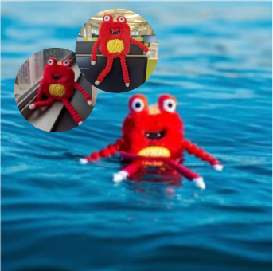
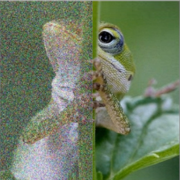
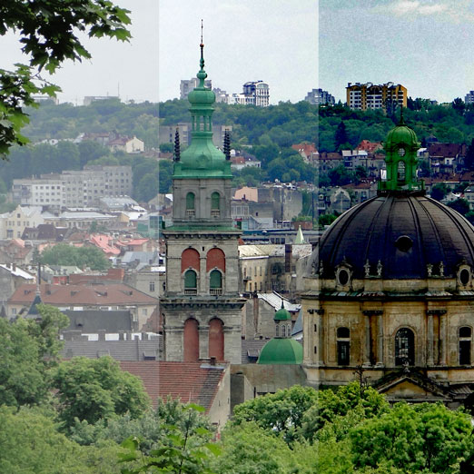
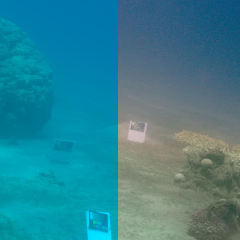
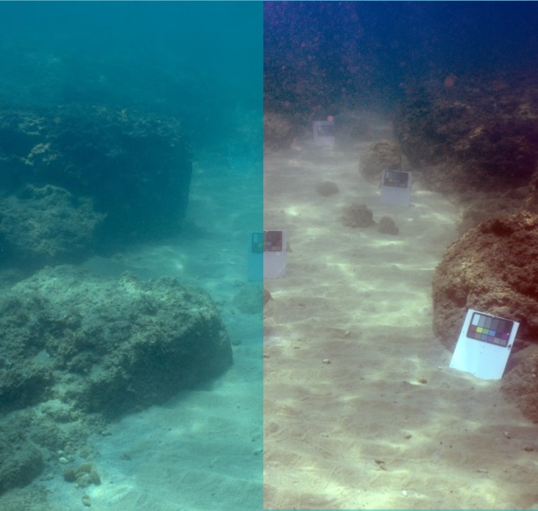
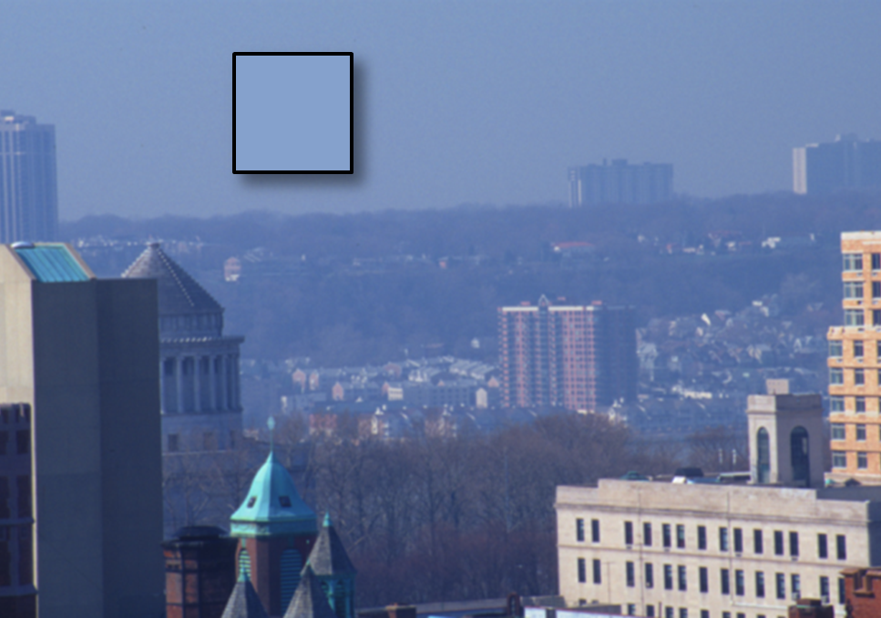
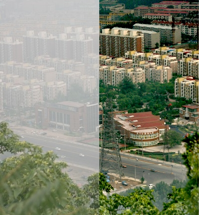

I work at Google Research, at the intersection of my professional interests in generative image processing, and my personal interest in photography and image editing.
I completed my PhD at the School of Electrical Engineering at Tel Aviv University, under the supervision of Prof. Shai Avidan and Prof. Tali Treibitz.
Selected Publications

ObjectMate: A Recurrence Prior for Object Insertion and Subject-Driven Generation
Proceedings of the IEEE/CVF International Conference on Computer Vision (ICCV), 2025

SVNR: Spatially-Variant Noise Removal with Denoising Diffusion
arXiv preprint arXiv:2306.16052, 2023

Single Image Dehazing Using Haze-Lines
IEEE Transactions on Pattern Analysis and Machine Intelligence (PAMI), 2020

Underwater Single Image Color Restoration Using Haze-Lines and a New Quantitative
Dataset
IEEE Transactions on Pattern Analysis and Machine Intelligence, vol. 43, no. 8, pp.
2822-2837, 2021


